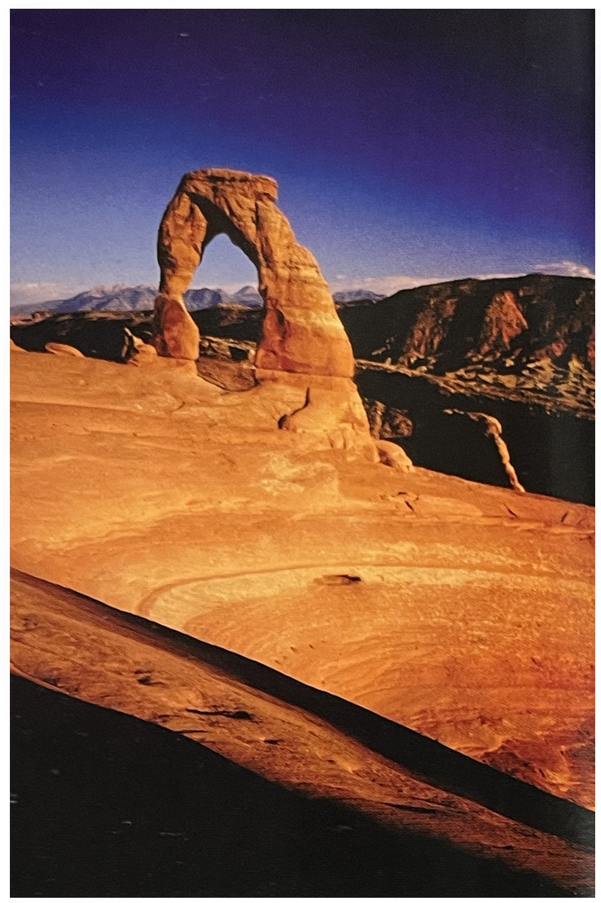
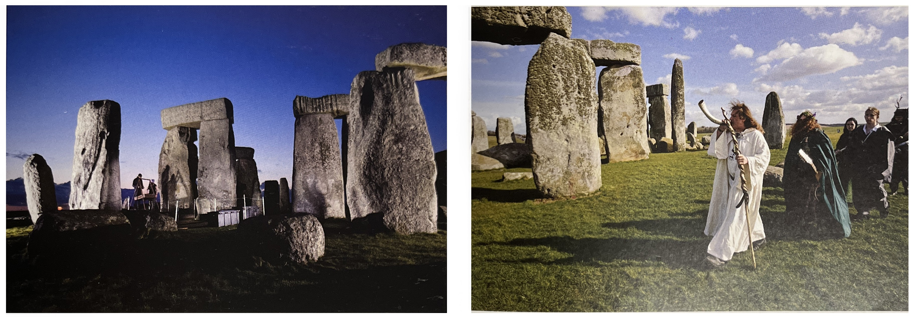
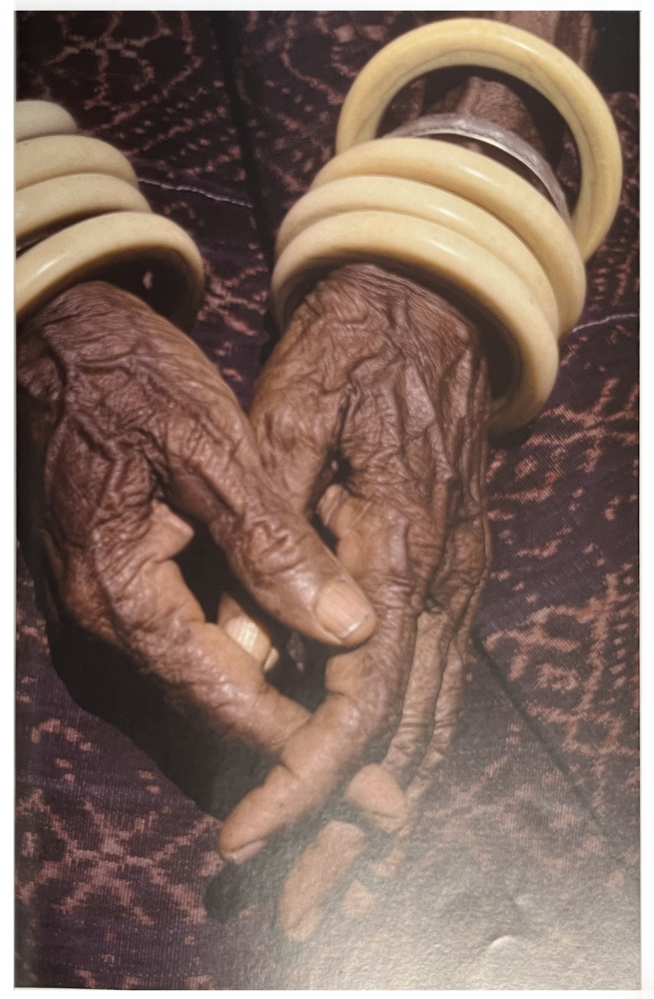

✓ 본래 매력적인 피사체를 전통적으로 매력적인 시점에서 촬영한 것.
✓ 위에 해당하는 관광코스를 기존의 시점에서 촬영한 것.
✓ 이전에 많이 팔려나간 강렬한 양식적 기법을 사용하는 것.
누구나 알 수 있고 과도하게 사용되었던 양식을 사용하는 것.
예를 들면, 1970년대에 유행했다가 금세 사라져버린 것으로
노출이 이루어지는 동안 줌렌즈를 급속도로 주밍 하여 흐리게 만든 이미지.
또 한 가지 최근의 예로는 실제 장면을 촬영하면서 틸트 렌즈를 사용하여
초점영역을 좁게 한정시켜서 마치 작은 모형을 촬영한 것처럼 만드는 것.
✓ 피사체나 스타일이 너무 널리 알려지고 누구나 재현할 수 있어서
다른 많은 사람들도 촬영하는 것들은 성공 그 자체가 덫이 되어 진부해진다.
예를 들면 직선이 사선이 되도록 만드는 것으로,
1990년대 몇 년 동안 미국에서는 산뜻한 것으로 간주되었다.
노출과다를 시켜서 톤을 바래도록 만든다든지,
필름을 크로스 현상하는 기법도 마찬가지다.

➪ 필연적 시점 : 이 바위 아치는 한정된 앵글에서만 시각적으로 아치로 보인다.
❍ 진부한 장면을 다루는 방법[1/p55]
✓ 고해상도나 다이내믹 레인지 같이 기술적으로 우월한 이미지를 확보하라
✓ 구성을 세련되게 하는 것과 같이 양식적으로 더 우월한
(취향의 문제이기는 하지만)이미지를 만들라
✓ 가능하다면 다른 시점이나 다른 프레이밍을 찾아보라.
사진으로 너무 많이 촬영된 피사체는 어렵겠지만 여전히 가능성은 있다.
✓ 이미 찍은 사진들과는 다른 빛 조건과 날씨를 찾아라.
행운과 인내심만 있다면 많이 촬영된 장소라도 성공할 수 있다.
✓ 양식적으로 다르게 처리하라(우월한 것과는 다르다).
여기에는 다른 색상 표현, 키나 콘트라스트를 특수하게 처리한 흑백 이미지,
또는 1960년대에 초광각렌즈가 등장했던 것과 마찬가지로
새로운 기술을 이용한 스타일을 사용하는 것 등이 포함된다.
✓ 피사체를 다시 규명해 보라.
파인아트 사진에서는 이 방법이 가장 많은 보상이 따르는 작업이다.
피사체를 재 규명하는 일은 끝이 없지만,
예를 들자면 한걸음 물러서서
다른 사진가들이 사진을 찍는 모습을 장면에 포함시켜서 이미지의
주제에 변화를 주는 것이다.

➪ 시도된 일이 없는 시점 : 스톤핸지의 장면, 거의 반세기 만에 허가를 받아서 이루어진 최초의 고고학적 발굴작업이 취재의 요청이었다. 그리고 결과물은 관광책자를 위해서는 쓸모가 없을 것으로 생각되지만, 독특한 시점이라는 점에서 대단한 가치가 있다.
➪ 풍상에 찌든 '손'사진 : 이 사진과 유사한 사진은 무수히 많다. 그렇다고 이런 사진이 무의미하다는 것은 아니다. 그러나 이런 사진은 표준적인 것을 떠오르게 하기 때문에, 새롭게 촬영하려면 정말 잘 찍어야 한다.
[참고문헌]
[1] 사진가 마인드, ‘마이클 프리맨’지음, 김문호 옮김, 비즈앤비즈, 2011.10.25.
[2] 원하는 사진을 어떻게 찍는가, 김성민, 소울메이트, 2015. 2. 9.
....
....
....
....
....